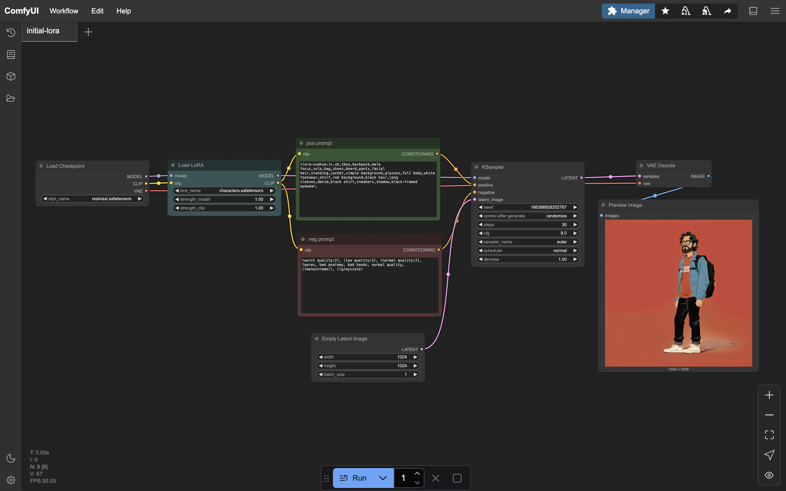

I build to automate my workflows, and learn something new in tech. Recently I'm building production ready AI apps.
I setup a comfy UI rig on an EC2 instance to play around with image generation using open source Flux, SDXL models and LoRAs. While setting up manually was excruciating, it was a good learning curve. Nowadays, docker images are available for easy setups.
Stable Diffusion ComfyUI LoRA AWS
GitHub Blog Blog
Most multimodal GPTs were not able to generate the new Hyundai Tucson model with the new wing-like DRLs. They generated only 2022 model. Probably trianing data cutoff. I decided to create a LoRA model that generates accurate Hyundai Tucson models.
LoRA Training Flux Replicate
GitHub Blog
Raspberry Pi w USB setup to host NFS server on home LAN. Allows downloaded media (TV shows, Movies) to be copied to attached USB storage via phone, and can eventually be played on smart TV using NFS server hosted on VLC.
Raspberyy Pi NFS Server SSH Termux VLC
GitHub Blog BlogEnd-to-end game-day automation for Chase Travel — orchestrating load injection, chaos injection, monitoring, and reporting to reclaim 5–6 hours per engineer per day. An AI layer was added to synthesize experiment results into structured summaries for compliance documentation.
AWS Step Functions Lambda FIS Gremlin DynamoDB Office DB-Streams
GitHub BlogReduced onboarding time from 4 days to less than 8hrs. Architected a multi cloud provisioning system to automate onboarding of client data to TeraData systems with modular features and validation. Reduced operational costs from $80,000 to less than $3000 every weekend. Created dashboards to show cost optimisation charts. Created scripts to auto shutdown test VMs and resources over the weekend.
Azure AWS GCP On-Demand Office Infrastructure-Provisioning
GitHub Blog